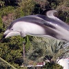
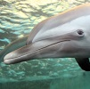

dolphin

カマイルカ
カマイルカは、水族館のイルカショーで、バンドウイルカとともに主役を演じるイルカです。 なにげなく見ていると、どちらが出ているのか、どこで入れ替わるのかさえ気にしていない方が多いですが、 バンドウイルカよりも小型で、より高くジャンプをしているのがカマイルカなのです。

バンドウイルカ
バンドウイルカは水族館でももっともポピュラーなイルカです。 水族館で普通に「イルカ」と言えばバンドウイルカのことで、絵本や挿絵に出てくるイルカもバンドウイルカが モデルであることが多いです。知能が高く好奇心が強いため、水族館での展示のほとんどは、ショーでパフォーマンスを 見せています
シロイルカ
シロイルカ（ベルーガ）は北極海からやってきた大型のイルカ。真っ白で背ビレがない体に、大きくて丸い頭部など、 他のイルカの姿とはずいぶん違う。なによりも、自由自在に曲げることのできる首が特徴的で、柔らかくてよく動く口と共に、 鯨類にしては珍しく「表情」があるように感じる時があります。